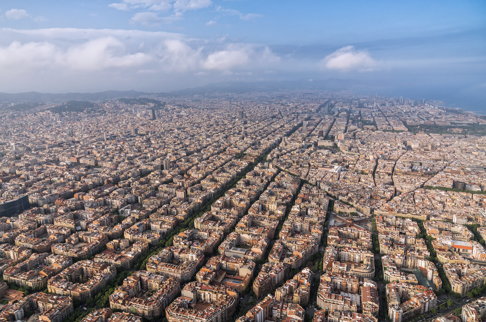

Culture of Barcelona
Barcelona is a city in northeastern Spain that serves as the capital of Catalonia, one of Spain's 17 autonomous regions. Here are some compelling reasons to visit Barcelona:
Barcelona is well-known for its architecture, much of it was designed by the great architect Antoni Gaud. His most well-known works include the Sagrada Famlia, Casa Milà, and Casa Batlló.
Barcelona is a foodie's dream, with variety and wonderful cuisine inspired by both traditional Catalan flavors and worldwide influences. Tapas, shellfish, and paella are popular dishes in the city.
Barcelona has a long artistic history, with artists such as Pablo Picasso and Salvador Dal living and working there. The city's modern art sector is booming as well, with institutions like the MACBA displaying cutting-edge contemporary art.
Beaches: Barcelona is positioned right on the Mediterranean coast, making it an ideal option for anyone looking for a city break as well as a beach vacation.
Barcelona boasts a thriving nightlife culture, with numerous bars, clubs, and live music venues to pick from.
Barcelona is typically secure for tourists, although as with any major city, precautions should be taken.
